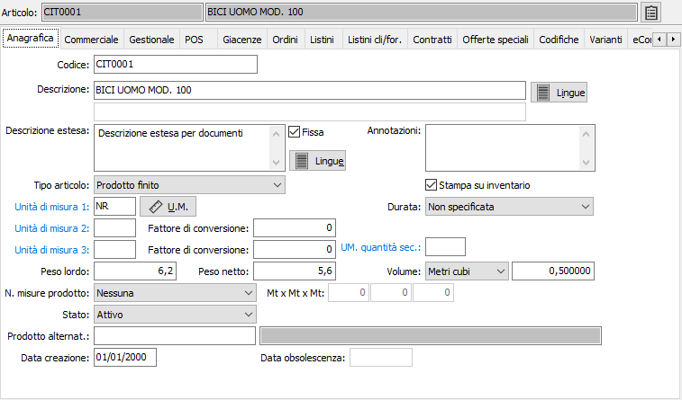
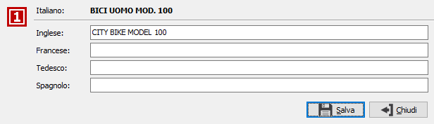
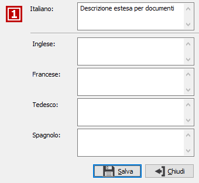

Anagrafica

CODICE PRODOTTO: codice alfanumerico di 22 caratteri, a libera scelta dell’utente, che individua l’articolo. Sul campo sono attive le funzioni di ricerca sulla tabella stessa.
DESCRIZIONE 1: campo alfanumerico di 60 caratteri per inserire la prima descrizione dell’articolo.
DESCRIZIONE 2: campo alfanumerico di 60 caratteri per inserire la seconda descrizione dell’articolo.
BOTTONE LINGUE: attivo solo se in configurazione è prevista la gestione delle lingue, accede interattivamente alla tabella Descrizioni in lingua dei prodotti per consentire l’inserimento delle descrizioni in lingua estera dei prodotti. Vengono visualizzate tutte le lingue straniere presenti nella relativa tabella.

DESCRIZIONE ESTESA: campo note per inserire la descrizione completa, ove necessario, dell’articolo. Se previsto dalla configurazione, questa descrizione estesa può essere stampata sui documenti in aggiunta alla descrizione dell’articolo.
FISSA: definisce se la descrizione estesa è modificabile dai documenti (casella vuota), oppure è fissa (casella con segno di spunta).
BOTTONE LINGUE: attivo solo se in configurazione è prevista la gestione delle lingue, consente l’inserimento delle descrizioni estese in lingua estera dei prodotti. Vengono visualizzate tutte le lingue straniere presenti nella relativa tabella.

ANNOTAZIONI: campo note interne.
TIPO ARTICOLO: definisce la modalità di ingresso del prodotto; materia prima, semilavorato, prodotto finito, lavorazione, prestazione servizio. Il valore “Prestazione/servizio” identifica i codici delle prestazioni o servizi che, pur codificati per comodità di inserimento nei documenti, non movimentano il magazzino e non vengono trattati dalle statistiche di magazzino.
STAMPA SU INVENTARIO: definisce se l'articolo deve comparire nella stampa dell'inventario (casella con segno di spunta).
DURATA: Il campo è visibile solo se è attiva in configurazione la cessione dei prodotti agricoli e agroalimentari e può assumere i valori:
“Non specificata”, in tal caso l’articolo non rientra nella normativa prevista per i prodotti agricoli;
“Prodotto deteriorabile”, per l’articolo indicato come prodotto deteriorabile entra in vigore la normativa che prevede il pagamento entro il termine legale di trenta giorni dalla data di ricevimento fattura;
“Prodotto non deteriorabile”, per l’articolo indicato come prodotto non deteriorabile entra in vigore la normativa che prevede il pagamento entro il termine legale di sessanta giorni dalla data di ricevimento fattura.
UNITÀ MISURA 1: codice alfanumerico, presente in tabella Unità di misura, che definisce l’unità di misura primaria dell’articolo con cui vengono gestite le quantità di magazzino. Sul campo sono attive le funzioni di ricerca e di manutenzione della tabella. Il pulsante Unità di misura (U.M.) consente l'accesso alla finestra per la gestione delle Unità di misura aggiuntive e preferenziali, se attive da configurazione.
UNITÀ MISURA 2: eventuale seconda unità di misura, presente in tabella Unità di misura, che può essere utilizzata solo in fatturazione o in emissione Ddt in alternativa all’unità di misura primaria. Gli eventuali scarichi di magazzino avverranno comunque sempre in base all’unità di misura primaria, avvalendosi del fattore di conversione indicato a lato.
FATTORE DI CONVERSIONE: campo numerico per contenere il fattore di conversione fra l’unità di misura 2 e l’unità di misura primaria.
UNITÀ MISURA 3: eventuale terza unità di misura, presente in tabella Unità di misura, che può essere utilizzata solo in fatturazione o in emissione Ddt in alternativa all’unità di misura primaria. Gli eventuali scarichi di magazzino avverranno comunque sempre in base all’unità di misura primaria, avvalendosi del fattore di conversione indicato a lato.
FATTORE DI CONVERSIONE: campo numerico per contenere il fattore di conversione fra l’unità di misura 3 e l’unità di misura primaria.
PESO LORDO: campo numerico per indicare il peso lordo in kg dell'articolo riferito all'unità di misura 1. Serve per la stampa dei Ddt.
PESO NETTO: campo numerico per indicare il peso netto in kg dell'articolo riferito all'unità di misura 1. Serve per la stampa dei Ddt.
VOLUME: I 2 campi indicano rispettivamente l’unità di misura ed il volume dell’articolo. L’unità di misura può essere in centimetri cubi o in metri cubi. Il volume è un campo numerico decimale.
N. MISURE PRODOTTO: combo box per indicare se il prodotto è gestito a metri lineari, metri quadrati o metri cubi in relazione alle dimensioni da utilizzare.
MISURE PRODOTTO: campi numerici abilitati in base al valore del campo precedente; indicare le misure del prodotto che saranno poi utilizzate nell'inserimento dei documenti, se attiva la gestione, come proposta.
STATO: combo box gestito dall’utente per indicare lo stato del prodotto. Valori ammessi: Attivo; In esaurimento; Obsoleto.
PRODOTTO ALTERNATIVO: campo significativo se il prodotto è obsoleto. Può contenere il codice del nuovo prodotto che sostituisce il presente.
DATA CREAZIONE: indica la data in cui l'articolo è stato caricato. Al momento del caricamento di un nuovo record in questo campo viene proposta la data di sistema.
DATA OBSOLESCENZA: indica la data in cui l'articolo è stato dichiarato obsoleto.